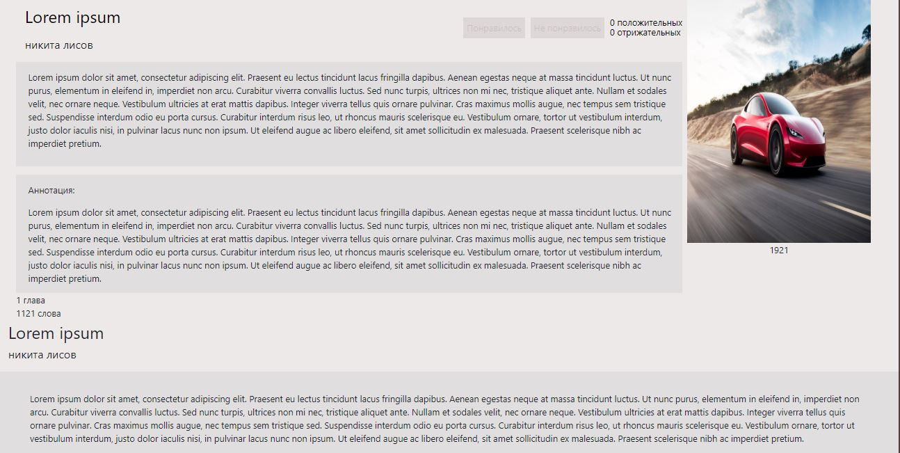

Проект по учебной практике 11.01
Общее описание проекта
Сервис, где пользователи могут выкладывать книги, статьи, оценивать их, создавать рецензии и дискуссии.
Схема базы данных
Таблица Profile - таблица с профилями
Таблица Review - таблица с рецензиями
Таблица Books - таблица с книгами
Таблица Discussion - таблица с дискуссиями
Таблица Writer - таблица с авторами
Таблица Message - таблица с сообщениями в дискуссии
Таблица Likes - таблица с лайками для книги
Таблица LikesReview - таблица с лайками для рецензий
Описание каждой таблицы
Таблица Articles
Эта таблица описывает модель статей
class Articles(models.Model):
HISTORY = 'HIS'
LITER = 'LIT'
ARTICLE_PERMISSION_CHOICES = [
(HISTORY, 'Историческая'),
(LITER, 'Литературная'),
]
type = models.CharField(
max_length=3,
choices=ARTICLE_PERMISSION_CHOICES,
verbose_name="Тип"
)
article_title = models.TextField(verbose_name="Название")
discription = models.TextField(verbose_name="Описание")
content = models.TextField(verbose_name="Содержимое")
status = models.BooleanField(default=False, verbose_name="Статус")
image = models.ImageField(blank=True, null=True, upload_to=generate_imageset_upload_to)
user = models.ForeignKey(User, on_delete=models.CASCADE, verbose_name="Создатель")
class Meta:
verbose_name = "Статья"
verbose_name_plural = "Статьи"
def __str__(self):
return self.article_title
Поле type - поле с типом статьи. Статьи делятся на "Исторические" и "Литературные".
Поле article_title - поле с названием статьи.
Поле discription - поле с описанием статьи.
Поле content - поле с содержанием статьи.
Поле status - поле статуса статьи. Пользователи видят статьи, у который поддтвержденный статус. Статус меняет администратор.
Поле image - поле для обложки статьи. Это поле необязательно для заполнения.
Поле user - поле, которое адресует на пользонателя, который создал эту статью.
Таблица Profile
Эта таблица описывает модель профиля
class Profile(models.Model):
ADMIN = 'ADM'
CLIENT = 'CLI'
USER_PERMISSION_CHOICES = [
(ADMIN, 'Админ'),
(CLIENT, 'Пользователь'),
]
role = models.CharField(
max_length=3,
choices=USER_PERMISSION_CHOICES,
default=CLIENT
)
user = models.OneToOneField(User, on_delete=models.CASCADE)
phone = models.TextField(max_length=12, blank=True)
image = models.ImageField(blank=True, null=True, upload_to=generate_imageset_upload_to)
class Meta:
verbose_name = 'Профиль'
verbose_name_plural = 'Профили'
def __str__(self):
return self.user.username
Поле role - поле с типом пользователя. Пользователи делятся на "Администратор" и "Пользователь".
Поле user - поле, которое адресует на пользонателя.
Поле phone - поле с номером телефона.
Поле image - поле для аватарки пользователя. Это поле необязательно для заполнения.
Таблица Writer
Эта таблица описывает модель писателя
class Writer(models.Model):
name = models.TextField(verbose_name="Имя")
date_life = models.TextField(verbose_name="Даты жизни")
biografi = models.TextField(verbose_name="Биография")
bibliografi = models.TextField(verbose_name="Библиография")
about_life = models.TextField(verbose_name="Произведения о жизни")
status = models.BooleanField(default=False, verbose_name="Статус")
image = models.ImageField(blank=True, null=True, upload_to=generate_imageset_upload_to)
class Meta:
verbose_name = "Писатель"
verbose_name_plural = "Писатели"
def __str__(self):
return self.name
Поле name - поле с именем писателя.
Поле date_life - поле для даты жизни.
Поле biografi - поле для биографии писателя.
Поле about_life - поле для произведений, которые описывают жизнь автора.
Поле status - поле для статуса писателя.
Поле image - поле фотографии писателя. Это поле необязательно для заполнения.
Таблица Books
Эта таблица описывает модель книги
class Books(models.Model):
BOOK = 'DEF'
PROSE = 'PRS'
BOOK_PERMISSION_CHOICES = [
(BOOK, 'Книги'),
(PROSE, 'Проза'),
]
type = models.CharField(
max_length=3,
choices=BOOK_PERMISSION_CHOICES,
verbose_name="Тип"
)
author = models.ForeignKey(Writer, on_delete=models.CASCADE, verbose_name="Создатель")
title = models.TextField(verbose_name="Название")
date = models.TextField(blank=True, null=True, verbose_name="Дата написания")
discription = models.TextField(verbose_name="Описание")
anatation = models.TextField(verbose_name="Аннотация")
text = models.TextField(blank=True, null=True, verbose_name="Текст")
plus_rating = models.IntegerField( verbose_name="Положительный рейтинг")
words = models.IntegerField(blank=True, null=True, verbose_name="Количество слов")
chapters = models.IntegerField(blank=True, null=True, verbose_name="Количество глав")
minus_rating = models.IntegerField( verbose_name="Отрицательный рейтинг")
status = models.BooleanField(default=False, verbose_name="Статус")
image = models.ImageField(blank=True, null=True, upload_to=generate_imageset_upload_to)
user = models.ForeignKey(User, on_delete=models.CASCADE, verbose_name="Создатель")
class Meta:
verbose_name = "Книга"
verbose_name_plural = "Книги"
def __str__(self):
return self.title
Поле type - поле с типом книги. Статьи делятся на "Книги" и "Проза".
Поле author - поле, которое адресует на автора этой книги.
Поле title - поле с названием книги.
Поле date - поле с датой написания.
Поле discription - поле с описанием книги.
Поле text - поле с содержимом книги. Это поле необязательно для заполнения.
Поле plus_rating - поле с положительным рейтингом.
Поле words - поле с количеством слов. Это поле необязательно для заполнения.
Поле chapters - поле с количеством глав. Это поле необязательно для заполнения.
Поле minus_rating - поле с отрицательным рейтингом.
Поле status - поле статуса книги. Пользователи видят книги, у который поддтвержденный статус. Статус меняет администратор.
Поле image - поле с обложкой книги.
Поле user - поле, которое адресует на пользователя, который создал книгу.
Таблица Review
Эта таблица описывает модель рецензии
class Review(models.Model):
user = models.ForeignKey(User, on_delete=models.CASCADE, verbose_name="Создатель")
book = models.ForeignKey(Books, on_delete=models.CASCADE, verbose_name="Книга")
title = models.TextField(verbose_name="Название")
discription = models.TextField(verbose_name="Описание")
minus_rating = models.IntegerField( verbose_name="Отрицательный рейтинг")
plus_rating = models.IntegerField( verbose_name="Положительный рейтинг")
class Meta:
verbose_name = "Рецензия"
verbose_name_plural = "Рецензии"
def __str__(self):
return self.title
Поле book - поле, которое адресует на книгу, к которой создана рецензия.
Поле title - поле с названием рецензии.
Поле discription - поле с описанием рецензии.
Поле plus_rating - поле с положительным рейтингом.
Поле minus_rating - поле с отрицательным рейтингом.
Поле user - поле, которое адресует на пользователя, который создал рецензию.
Таблица Discussion
Эта таблица описывает модель дискуссий
class Discussion(models.Model):
title = models.TextField(verbose_name="Название")
book = models.ForeignKey(Books, on_delete=models.CASCADE, verbose_name="Книга")
class Meta:
verbose_name = "Дискуссия"
verbose_name_plural = "Дискуссии"
def __str__(self):
return self.title
Поле book - поле, которое адресует на книгу, к которой создана дискуссия.
Поле title - поле с названием дискуссии.
Таблица Message
Эта таблица описывает модель сообщений
class Message(models.Model):
user = models.ForeignKey(User, on_delete=models.CASCADE, verbose_name="Создатель")
discussion = models.ForeignKey(Discussion, on_delete=models.CASCADE, verbose_name="Тема дискуссии")
text = models.TextField(blank=True, null=True, verbose_name="Текст")
class Meta:
verbose_name = "Сообщение"
verbose_name_plural = "Сообщения"
def __str__(self):
return self.text
Поле discussion - поле, которое адресует на дискуссию, к которой создано сообщение.
Поле text - поле с содержимом сообщения.
Поле user - поле, которое адресует на пользователя, который написал сообщение.
Таблица Likes
Эта таблица описывает модель лайков книг
class Likes(models.Model):
LIK = 'LIK'
DIS = 'DIS'
LIKES_PERMISSION_CHOICES = [
(LIK, 'Лайк'),
(DIS, 'Дислайк'),
]
type = models.CharField(
max_length=3,
choices=LIKES_PERMISSION_CHOICES,
verbose_name="Тип"
)
user = models.ForeignKey(User, on_delete=models.CASCADE, verbose_name="Создатель")
book = models.ForeignKey(Books, on_delete=models.CASCADE, verbose_name="Книга")
class Meta:
verbose_name = "Лайк"
verbose_name_plural = "Лайки"
def __str__(self):
return self.type
Поле book - поле, которое адресует на книгу, которой поставлена оценка.
Поле type - поле с типом оценки. Оценки делятся на "Лайки" и "Дислайки"
Поле user - поле, которое адресует на пользователя, который поставил оценку.
Таблица LikesReview
Эта таблица описывает модель лайков рецензий
class LikesReview(models.Model):
LIK = 'LIK'
DIS = 'DIS'
LIKES_PERMISSION_CHOICES = [
(LIK, 'Лайк'),
(DIS, 'Дислайк'),
]
type = models.CharField(
max_length=3,
choices=LIKES_PERMISSION_CHOICES,
verbose_name="Тип"
)
user = models.ForeignKey(User, on_delete=models.CASCADE, verbose_name="Создатель")
review = models.ForeignKey(Review, on_delete=models.CASCADE, verbose_name="Статья")
class Meta:
verbose_name = "Лайк рецензии"
verbose_name_plural = "Лайки рецинзий"
def __str__(self):
return self.type
Поле review - поле, которое адресует на рецензию, которой поставлена оценка.
Поле type - поле с типом оценки. Оценки делятся на "Лайки" и "Дислайки"
Поле user - поле, которое адресует на пользователя, который поставил оценку.
Описание страниц
Адресация страниц представлена ниже.
urlpatterns = [
path('', views.index),
path('accounts/', include('django.contrib.auth.urls'), {'next_page': '/'}),
path('books/', views.books),
path('articles/', views.articles),
path('writer/<int:pk>/', views.writer.as_view()),
path('read_one_review/<int:pk>/', views.read_one_review.as_view()),
path('discussion/<int:pk>/', views.discussion.as_view()),
path('read_book/<int:pk>/', views.read_book.as_view()),
path('read_article/<int:pk>/', views.read_article.as_view()),
path('admin_dev/', views.admin_dev),
path('password_recovery/', views.password_recovery),
path('profile/', views.profile),
path('profile_edit/', views.profile_edit),
path('create_author/', views.create_author),
path('article_confirmation/', views.article_confirmation),
path('admin_create_composition/', views.admin_create_composition),
path('confirmation_works/', views.confirmation_works),
path('creat_composition/', views.creat_composition),
path('create_article/', views.create_article),
path('create_discussion/', views.create_discussion),
path('create_rewies/', views.create_rewies),
path('read_one_book/<int:pk>/', views.read_one_book.as_view()),
]
Страница по ссылке '/'
По адресу '/' распологается главная страница.
За эту страницу отвечает функция index.
def index(request):
article = Articles.objects.all()
books = Books.objects.all()
context = {'article':article, 'books':books}
if request.method == 'POST':
data = request.POST
if data.get("register"):
user = User.objects.create_user(data.get('login'), data.get('email'), data.get('password'))
# user.profile.phone = data.get('phone')
user.save()
if data.get("enter"):
print(data)
user = authenticate(request, username=data.get('login'), password=data.get('password'))
if user is not None:
login(request, user)
else:
# context = {'error': "Неправильные параметры входа. Проверьте логин и пароль."}
print("Неправильные параметры входа. Проверьте логин и пароль.")
# return render(request, 'main/index.html', context)
if data.get("search"):
books = Books.objects.filter(title = data.get('search'))
article = Articles.objects.filter(article_title = data.get('search'))
context['books'] = books
context['article'] = article
print(data)
return render(request, 'main/index.html', context)
Эта функция передает в шаблон(index.html) книги(Books) и статьи(Articles). Также эта функция обрабатывает события поиска, регистрации и авторизации.


Страница по ссылке 'accounts/'
По адресу 'accounts/' показывается шапка сайта если пользователь авторизован.

Страница по ссылке 'books/'
По адресу 'books/' распологается страница с книгами.
За эту страницу отвечает функция books.
def books(request):
books = Books.objects.all()
context = {'books':books}
if request.method == 'POST':
data = request.POST
if data.get('rating'):
books = Books.objects.order_by('-plus_rating')
context['books'] = books
print(data)
if data.get('name'):
books = Books.objects.order_by('title')
context['books'] = books
print(data)
if data.get('search_book'):
books = Books.objects.filter(title = data.get('search_book'))
context['books'] = books
print(data.get('search_book'))
return render(request, 'main/books.html', context)
Эта функция передает в шаблон(books.html) книги(Books). Также эта функция обрабатывает события поиска.

Страница по ссылке 'articles/'
По адресу 'articles/' распологается страница со статьями.
За эту страницу отвечает функция articles.
def articles(request):
article = Articles.objects.all()
context = {'article':article}
if request.method == 'POST':
data = request.POST
if data.get('name'):
article = Articles.objects.order_by('article_title')
context['article'] = article
print(data)
if data.get('search_article'):
article = Articles.objects.filter(article_title = data.get('search_article'))
context['article'] = article
print(data.get('search_article'))
return render(request, 'main/articles.html', context)
Эта функция передает в шаблон(articles.html) статьи(Articles). Также эта функция обрабатывает события поиска.

Страница по ссылке 'writer/'
По адресу 'writer/' распологается страница с автором.
За эту страницу отвечает класс writer.
class writer(View):
template_name = 'main/writer.html'
def get(self, request, *args, **kwargs):
writer = get_object_or_404(Writer, pk=kwargs['pk'])
rewies = Review.objects.all()
discussion = Discussion.objects.all()
data = {'writer':writer}
return render(request, self.template_name, context=data)
Этот класс передает в шаблон(writer.html) писателей(Writer). Этот класс позволяет выводить писателей через их PrimaryKey.

Страница по ссылке 'read_one_review/'
По адресу 'read_one_review/' распологается страница с рицензии.
За эту страницу отвечает класс read_one_review.
class read_one_review(View):
template_name = 'main/read_one_review.html'
def get(self, request, *args, **kwargs):
review = get_object_or_404(Review, pk=kwargs['pk'])
likes = LikesReview.objects.all()
context = {'review': review, 'likes': likes}
return render(request, self.template_name, context)
def post(self, request, *args, **kwargs):
review = get_object_or_404(Review, pk=kwargs['pk'])
likes = LikesReview.objects.all()
context = {'review':review, 'likes': likes}
data = request.POST
print(data)
if request.POST.get('like'):
like = LikesReview.objects.get(id=data.get('like'))
like.type = 'LIK'
like.save()
review = Review.objects.get(id=data.get('like_input'))
review.plus_rating += 1
review.minus_rating -= 1
review.save()
if request.POST.get('like2'):
like = LikesReview()
like.type = 'LIK'
like.user = User.objects.get(id=request.user.id)
like.review = Review.objects.get(id=data.get('like2'))
like.save()
review = Review.objects.get(id=data.get('like2'))
review.plus_rating += 1
review.save()
if request.POST.get('dislike'):
like = LikesReview.objects.get(id=data.get('dislike'))
like.type = 'DIS'
like.save()
review = Review.objects.get(id=data.get('dislike_input'))
review.plus_rating -= 1
review.minus_rating += 1
review.save()
if request.POST.get('dislike2'):
like = LikesReview()
like.type = 'DIS'
like.user = User.objects.get(id=request.user.id)
like.review = Books.objects.get(id=data.get('dislike2'))
like.save()
review = Review.objects.get(id=data.get('dislike2'))
review.minus_rating += 1
review.save()
return render(request, self.template_name, context)
Этот класс передает в шаблон(read_one_review.html) дискуссии(Review) и лайки(LikesReview). Этот класс позволяет выводить рицензии через их PrimaryKey и реазизована система оценивания.

Страница по ссылке 'discussion/'
По адресу 'discussion/' распологается страница с дискуссией.
За эту страницу отвечает класс discussion.
class discussion(View):
template_name = 'main/discussion.html'
def get(self, request, *args, **kwargs):
discussion = get_object_or_404(Discussion, pk=kwargs['pk'])
messages = Message.objects.all()
paginator = Paginator(messages, 2)
page = self.request.GET.get('page')
try:
messages = paginator.page(page)
except PageNotAnInteger:
# Если страница не является целым числом, поставим первую страницу
messages = paginator.page(1)
except EmptyPage:
# Если страница больше максимальной, доставить последнюю страницу результатов
messages = paginator.page(paginator.num_pages)
context = {'discussion': discussion, 'message':messages}
return render(request, self.template_name, context)
def post(self, request, *args, **kwargs):
discussion = get_object_or_404(Discussion, pk=kwargs['pk'])
messages = Message.objects.all()
paginator = Paginator(messages, 2)
page = self.request.GET.get('page')
try:
messages = paginator.page(page)
except PageNotAnInteger:
messages = paginator.page(1)
except EmptyPage:
messages = paginator.page(paginator.num_pages)
data = request.POST
print(data)
message = Message()
message.user = User.objects.get(id=request.user.id)
message.discussion = discussion
message.text = data.get('text')
message.save()
context = {'discussion': discussion, 'message':messages}
return render(request, self.template_name, context)
Этот класс передает в шаблон(discussion.html) дискуссии(Discussion) и сообщения(Message). Этот класс позволяет выводить дискуссии через их PrimaryKey, сообщения, которые относятся к данной дискуссии и написать новое сообщение.

Страница по ссылке 'read_book/'
По адресу 'read_book/' распологается страница с отдельной книгой.
За эту страницу отвечает класс read_book.
class read_book(View):
template_name = 'main/read_book.html'
def get(self, request, *args, **kwargs):
books = get_object_or_404(Books, pk=kwargs['pk'])
rewies = Review.objects.all()
discussion = Discussion.objects.all()
likes = Likes.objects.all()
data = {'books':books, 'rewies':rewies, 'discussion': discussion, 'likes': likes}
return render(request, self.template_name, context=data)
def post(self, request, *args, **kwargs):
books = get_object_or_404(Books, pk=kwargs['pk'])
rewies = Review.objects.all()
discussion = Discussion.objects.all()
likes = Likes.objects.all()
context = {'books':books, 'rewies':rewies, 'discussion': discussion, 'likes': likes}
data = request.POST
print(data)
if request.POST.get('like'):
like = Likes.objects.get(id=data.get('like'))
like.type = 'LIK'
like.save()
book = Books.objects.get(id=data.get('like_input'))
book.plus_rating += 1
book.minus_rating -= 1
book.save()
if request.POST.get('like2'):
like = Likes()
like.type = 'LIK'
like.user = User.objects.get(id=request.user.id)
like.book = Books.objects.get(id=data.get('like2'))
like.save()
book = Books.objects.get(id=data.get('like2'))
book.plus_rating += 1
book.save()
if request.POST.get('dislike'):
like = Likes.objects.get(id=data.get('dislike'))
like.type = 'DIS'
like.save()
book = Books.objects.get(id=data.get('dislike_input'))
book.plus_rating -= 1
book.minus_rating += 1
book.save()
if request.POST.get('dislike2'):
like = Likes()
like.type = 'DIS'
like.user = User.objects.get(id=request.user.id)
like.book = Books.objects.get(id=data.get('dislike2'))
like.save()
book = Books.objects.get(id=data.get('dislike2'))
book.minus_rating += 1
book.save()
return render(request, self.template_name, context)
Этот класс передает в шаблон(read_book.html) книгу(Books), дискуссии(Discussion), рецензии(Review) и лайки(Likes). Этот класс позволяет выводить книги через их PrimaryKey, рецензии, дискуссии и лайки, которые относятся к данной книге.

Страница по ссылке 'read_article/'
По адресу 'read_article/' распологается страница с отдельной статьей.
За эту страницу отвечает класс read_article.
class read_article(View):
template_name = 'main/read_article.html'
def get(self, request, *args, **kwargs):
article = get_object_or_404(Articles, pk=kwargs['pk'])
context = {'article': article}
return render(request, self.template_name, context)
Этот класс передает в шаблон(read_article.html) статью(Articles). Этот класс позволяет выводить статьи через их PrimaryKey.

Страница по ссылке 'admin_dev/'
По адресу 'admin_dev/' распологается страница с административной панелью.
За эту страницу отвечает функция admin_dev.
def admin_dev(request):
return render(request, 'main/admin_panel.html')
Эта функция обращается к шаблону(admin_panel.html).

Страница по ссылке 'password_recovery/'
По адресу 'password_recovery/' распологается страница с формой восстановления пароля.
За эту страницу отвечает функция password_recovery.
def password_recovery(request):
return render(request, 'main/password_recovery.html')
Эта функция обращается к шаблону(password_recovery.html).

Страница по ссылке 'profile/'
По адресу 'profile/' распологается страница с личным профилем.
За эту страницу отвечает функция profile.
def profile(request):
books = Books.objects.all()
article = Articles.objects.all()
review = Review.objects.all()
likes = Likes.objects.all()
data = {'article':article, 'books':books, 'review':review, 'likes':likes}
return render(request, 'main/personal_account.html', context=data)
Эта функция обращается к шаблону(personal_account.html) и передает туда статии(Articles), книги(Books), рецензии(Review), лайки(Likes).

Страница по ссылке 'profile_edit/'
По адресу 'profile_edit/' распологается страница с редактирование личного профиля.
За эту страницу отвечает функция profile_edit.
def profile_edit(request):
if request.method == 'POST':
data = request.POST
print(data)
user = User.objects.get(id=request.user.id)
user.username = data.get('login')
user.first_name = data.get('name')
user.last_name = data.get('surname')
user.email = data.get('email')
user.profile.image = request.FILES.get('image')
user.save()
if data.get('old_pass') != "":
old_password = request.POST.get("old_pass")
new_pass = request.POST.get("new_pass")
if check_password(old_password, user.password):
user.set_password(new_pass)
update_session_auth_hash(request, user)
user.save()
return render(request, 'main/profile.html')
Эта функция обращается к шаблону(profile.html).

Страница по ссылке 'create_author/'
По адресу 'create_author/' распологается страница с создание автора.
За эту страницу отвечает функция create_author.
def create_author(request):
if request.method == 'POST':
data = request.POST
print(data)
author = Writer.objects.create()
author.name = data.get('name')
author.date_life = data.get('date_life')
author.biografi = data.get('biografi')
author.bibliografi = data.get('bibliografi')
author.about_life = data.get('about_life')
author.image = request.FILES.get('image')
author.save()
return render(request, 'main/create_author.html')
Эта функция обращается к шаблону(create_author.html).

Страница по ссылке 'article_confirmation/'
По адресу 'article_confirmation/' распологается страница с подтверждением статьи.
За эту страницу отвечает функция article_confirmation.
def article_confirmation(request):
articles = Articles.objects.all()
if request.method == 'POST':
if request.POST.get('disline'):
article_id = request.POST.get('disline')
article = Articles.objects.get(id=article_id)
article.delete()
if request.POST.get('accept'):
article_id = request.POST.get('accept')
article = Articles.objects.get(id=article_id)
article.status = True
article.save()
data = {'articles':articles}
return render(request, 'main/article_confirmation.html', context=data)
Эта функция обращается к шаблону(article_confirmation.html).

Страница по ссылке 'admin_create_composition/'
По адресу 'admin_create_composition/' распологается страница с созданием произведения у администратора.
За эту страницу отвечает функция admin_create_composition.
def admin_create_composition(request):
writer = Writer.objects.all()
if request.method == 'POST':
data = request.POST
print(data)
author_id = request.POST.get('author_id')
book = Books()
book.type = "DEF"
book.author = Writer.objects.get(id=author_id)
book.title = data.get('name')
book.date = data.get('date')
book.discription = data.get('discription')
book.anatation = data.get('anatation')
book.plus_rating = 0
book.minus_rating = 0
book.status = True
book.image = request.FILES.get('image')
book.user = User.objects.get(id=request.user.id)
book.save()
return render(request, 'main/admin_create_composition.html', {'writer':writer})
Эта функция обращается к шаблону(admin_create_composition.html) и передает туда авторов(Writer).

Страница по ссылке 'confirmation_works/'
По адресу 'confirmation_works/' распологается страница с подтверждением произведения.
За эту страницу отвечает функция confirmation_works.
def confirmation_works(request):
books = Books.objects.all()
if request.method == 'POST':
if request.POST.get('disline'):
book_id = request.POST.get('disline')
book = Books.objects.get(id=book_id)
book.delete()
if request.POST.get('accept'):
book_id = request.POST.get('accept')
book = Books.objects.get(id=book_id)
book.status = True
book.save()
data = {'books':books}
return render(request, 'main/confirmation_works.html', context=data)
Эта функция обращается к шаблону(confirmation_works.html) и передает туда книги(Books).

Страница по ссылке 'creat_composition/'
По адресу 'creat_composition/' распологается страница с созданием произведения у пользователя.
За эту страницу отвечает функция creat_composition.
def creat_composition(request):
if request.method == 'POST':
data = request.POST
print(data)
book = Books()
book.type = "PRS"
book.author = Writer.objects.get(id=1)
book.title = data.get('title')
book.discription = data.get('discription')
book.anatation = data.get('anatation')
book.text = data.get('text')
book.plus_rating = 0
book.minus_rating = 0
book.words = data.get('words')
book.chapters = data.get('chapters')
book.status = False
book.image = request.FILES.get('image')
book.user = User.objects.get(id=request.user.id)
book.save()
return render(request, 'main/creat_composition.html')
Эта функция обращается к шаблону(creat_composition.html).

Страница по ссылке 'create_article/'
По адресу 'create_article/' распологается страница с созданием статьи у пользователя.
За эту страницу отвечает функция create_article.
def create_article(request):
if request.method == 'POST':
data = request.POST
print(data)
article = Articles()
article.article_title = data.get('title')
article.discription = data.get('discription')
article.content = data.get('content')
article.status = False
article.image = request.FILES.get('image')
article.type = data.get('type')
article.user = User.objects.get(id=request.user.id)
article.save()
return render(request, 'main/create_article.html')
Эта функция обращается к шаблону(create_article.html).

Страница по ссылке 'create_discussion/'
По адресу 'create_discussion/' распологается страница с созданием дискуссии.
За эту страницу отвечает функция create_discussion.
def create_discussion(request):
if request.method == 'POST':
data = request.POST
print(data)
book_id = request.POST.get('book_id')
discussion = Discussion()
discussion.title = data.get('title')
discussion.book = Books.objects.get(id=book_id)
discussion.save()
last_discussion = Discussion.objects.last()
message = Message()
message.user = User.objects.get(id=request.user.id)
message.discussion = Discussion.objects.get(id=last_discussion.id)
message.text = data.get('text')
message.save()
return render(request, 'main/create_discussion.html')
Эта функция обращается к шаблону(create_discussion.html).

Страница по ссылке 'create_rewies/'
По адресу 'create_rewies/' распологается страница с созданием рецензии.
За эту страницу отвечает функция create_rewies.
def create_rewies(request):
if request.method == 'POST':
data = request.POST
print(data)
book_id = request.POST.get('book_id')
review = Review()
review.user = User.objects.get(id=request.user.id)
review.book = Books.objects.get(id=book_id)
review.title = data.get('title')
review.discription = data.get('text')
review.minus_rating = 0
review.plus_rating = 0
review.save()
return render(request, 'main/create_review.html')
Эта функция обращается к шаблону(create_review.html).

Страница по ссылке 'read_one_book/'
По адресу 'read_one_book/' распологается страница с возможностью чтения книги.
За эту страницу отвечает класс read_one_book.
class read_one_book(View):
template_name = 'main/read_one_book.html'
def get(self, request, *args, **kwargs):
books = get_object_or_404(Books, pk=kwargs['pk'])
likes = Likes.objects.all()
context = {'books': books, 'likes': likes}
return render(request, self.template_name, context)
def post(self, request, *args, **kwargs):
books = get_object_or_404(Books, pk=kwargs['pk'])
rewies = Review.objects.all()
discussion = Discussion.objects.all()
likes = Likes.objects.all()
context = {'books':books, 'likes': likes}
data = request.POST
print(data)
if request.POST.get('like'):
like = Likes.objects.get(id=data.get('like'))
like.type = 'LIK'
like.save()
book = Books.objects.get(id=data.get('like_input'))
book.plus_rating += 1
book.minus_rating -= 1
book.save()
if request.POST.get('like2'):
like = Likes()
like.type = 'LIK'
like.user = User.objects.get(id=request.user.id)
like.book = Books.objects.get(id=data.get('like2'))
like.save()
book = Books.objects.get(id=data.get('like2'))
book.plus_rating += 1
book.save()
if request.POST.get('dislike'):
like = Likes.objects.get(id=data.get('dislike'))
like.type = 'DIS'
like.save()
book = Books.objects.get(id=data.get('dislike_input'))
book.plus_rating -= 1
book.minus_rating += 1
book.save()
if request.POST.get('dislike2'):
like = Likes()
like.type = 'DIS'
like.user = User.objects.get(id=request.user.id)
like.book = Books.objects.get(id=data.get('dislike2'))
like.save()
book = Books.objects.get(id=data.get('dislike2'))
book.minus_rating += 1
book.save()
return render(request, self.template_name, context)
Эта функция обращается к шаблону(read_one_book.html) и передает туда книги(Books) и лайки(Likes).
